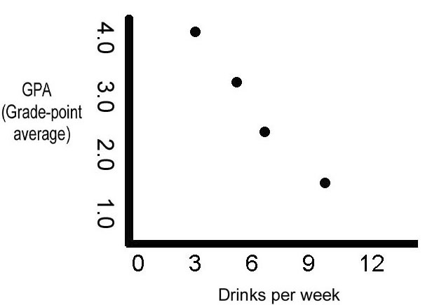

Correlation and linear regression
STA 150, Marshall UniversityAnna Mummert
Correlation
In some data sets, we measure two factors from each individual:
- Height and weight of a person
- Study time and exam grades of a student
- Advertising expenses and the resulting sales revenue for several products
- Drug dosage and the effect of the drug on each patient
- Age of a person and their political beliefs
When a change in one of the two factors from one data point to another is associated with a change in the other factor, we call this correlation.
Positive correlation
In positive correlation, an increase in one variable leads to an increase in the other.
- Foot size is larger for taller people
- Ice cream sales go up as the temperature increases
Positive correlation
This data set shows positive correlation.
Source: MM Mukaka, "A guide to appropriate use of Correlation coefficient in medical research", Malawi Med J. 2012 Sep; 24(3): 69–71. https://www.ncbi.nlm.nih.gov/pmc/articles/PMC3576830/
Negative correlation
In negative correlation, an increase in one variable leads to a decrease in the other.
- Among students, as the number of absences increases, the average grade decreases
- In the U.S., as temperature increases, heating costs decrease
- As the amount of snow in a winter increases, the average amount of driving the winter decreases
Negative correlation
This data set shows negative correlation.
Source: MM Mukaka, "A guide to appropriate use of Correlation coefficient in medical research",
Malawi Med J. 2012 Sep; 24(3): 69–71.
https://www.ncbi.nlm.nih.gov/pmc/articles/PMC3576830/
Correlation and causation
Correlation only means that a change in one variable leads to a change in the other.
It does not mean that a change in one variable causes a change in the other.
It could be that there is an underlying hidden variable that explains both of the variables we are looking at.
Correlation and causation
A researcher finds that, as windmills turn faster, there is more wind.
The researcher concludes that windmills can cause the wind to blow.
What is wrong with this conclusion?
The researcher has switched the real cause and the real effect.
This example is obvious, but this mistake is easy to make in other situations.
Correlation and causation
Among elementary school children there is a strong
positive correlation between
shoe size and reading ability.
Why do you think this is?
In elementary school children, shoe size and reading ability are both strongly affected by age (and thus grade level). This is a hidden variable.
Shoe size alone probably has nothing to do with reading ability.
Correlation and causation
In 1992, a study of 56,000 college students found that the more a student drinks alcohol, the lower the student's grades will be.
The data showed a strong negative correlation between drinking and grades
Nevertheless we can't use this study alone to show that drinking causes lower grades.
Source:
Correlation and causation,
https://www.psywww.com/intropsych/ch01-psychology-and-science/correlation-and-prediction.html
Correlation and causation
“A correlation does not tell us about the underlying cause of a relationship. We do not know from the Illinois data whether drinking was correlated with lower grades because (1) alcohol makes people stupid, or (2) the students who tend to drink tend to be poorer students to begin with, or (3) people who are hung-over from a drinking binge tend to skip class, or (4) students in academic trouble drink in order to drown their sorrows, or some other reason. ”
“There can be hundreds of possible explanations for a correlation: the number is limited only by your imagination and ingenuity in thinking up possible reasons for a relationship between two variables.”
Source: Cristian S. Calude and Giuseppe Longo, “The Deluge of Spurious Correlations in Big Data”, Foundations of Science, 2017, Volume 22, Issue 3, pp 595–612.
Correlation and causation: ethics
Especially when we use
correlations to understand people and their behaviour,
we have to be aware of ethical issues.
- Does the data measure what we want to measure?
- What hidden variables may be responsible for some of the correlation that we see?
- Are we looking at a cause/effect relationship, or at two effects of an underlying factor?
- Are we using our pre-existing opinions to ‘see what we want to see’ in the data?
When we that find two variables are correlated,
this is a starting point
for further
thought and analysis.
Correlation coefficient
In statistics, we don't just want to describe relationships.
We want to quantify them.
There are several correlation coefficients that can be used.
These are numbers that measure the strength of a correlation.
We will look at the most commonly used one.
Pearson's correlation coefficient
This number, called $r$, measures the strength of a correlation.
The number is always between $-1$ and $1$.
If $r$ is close to $1$, the assocation is nearly a line, and the correlation is positive.
If $r$ is close to $-1$, the association is nearly a line, and the correlation is negative.
If $r$ is close to $0$, there is no linear correlation. The data does not resemble a line.
Correlation coefficient
This data has $r = 0.2$.
Source: MM Mukaka, "A guide to appropriate use of Correlation coefficient in medical research",
Malawi Med J. 2012 Sep; 24(3): 69–71.
https://www.ncbi.nlm.nih.gov/pmc/articles/PMC3576830/
Correlation coefficient
This data has $r = 0.5$.
Source: MM Mukaka, "A guide to appropriate use of Correlation coefficient in medical research",
Malawi Med J. 2012 Sep; 24(3): 69–71.
https://www.ncbi.nlm.nih.gov/pmc/articles/PMC3576830/
Correlation coefficient
This data has $r = 0.8$.
Source: MM Mukaka, "A guide to appropriate use of Correlation coefficient in medical research",
Malawi Med J. 2012 Sep; 24(3): 69–71.
https://www.ncbi.nlm.nih.gov/pmc/articles/PMC3576830/
Correlation coefficient
This data has $r = -0.8$.
Source: MM Mukaka, "A guide to appropriate use of Correlation coefficient in medical research",
Malawi Med J. 2012 Sep; 24(3): 69–71.
https://www.ncbi.nlm.nih.gov/pmc/articles/PMC3576830/
Interpreting correlation coefficients
Each discipline has rules of thumb for interpreting correlation coefficients.
| Correlation
Coefficient | Psychology | Politics | Medicine | |
|---|---|---|---|---|
| +1 | −1 | Perfect | Perfect | Perfect |
| +0.9 | −0.9 | Strong | Very Strong | Very Strong |
| +0.8 | −0.8 | Strong | Very Strong | Very Strong |
| +0.7 | −0.7 | Strong | Very Strong | Moderate |
| +0.6 | −0.6 | Moderate | Strong | Moderate |
| +0.5 | −0.5 | Moderate | Strong | Fair |
| +0.4 | −0.4 | Moderate | Strong | Fair |
| +0.3 | −0.3 | Weak | Moderate | Fair |
| +0.2 | −0.2 | Weak | Weak | Poor |
| +0.1 | −0.1 | Weak | Negligible | Poor |
| 0 | 0 | Zero | None | None |
Source: Haldun Akoglu, "User's guide to correlation coefficients", Turk J Emerg Med. 2018 Sep; 18(3): 91–93. doi: 10.1016/j.tjem.2018.08.001
Other types of correlation
There are other, more complicated kinds of correlation. The correlation coefficient does not measure them.

Source: https://commons.wikimedia.org/wiki/File:Correlation_examples2.svg
Spurious correlations
The correlation coefficient only measures correlation. It does not measure whether either variable causes or affects the other. Some correlations are purely coincidental.
For these data sets, $r = -0.95$
Source: Tyler Vigen, Spurious correlations
Conclusion

Source: xkcd 552
Goals of this lesson
- Understand the concepts of positive and negative correlation
- Understand the difference between correlation and causation
- Understand the ethical issues affecting correlations
- Understand Pearson's correlation coefficient and how to interpret it
Reading
Textbook section 12.2: Scater Plots
Textbook section 12.3: The Regression Equation